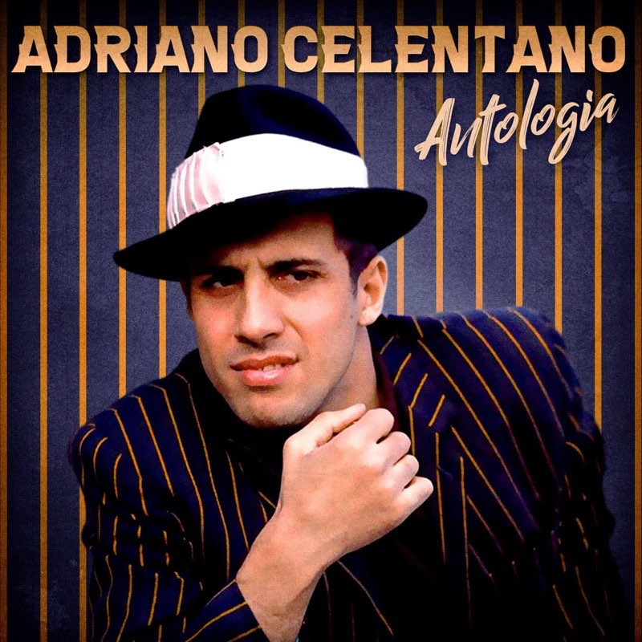
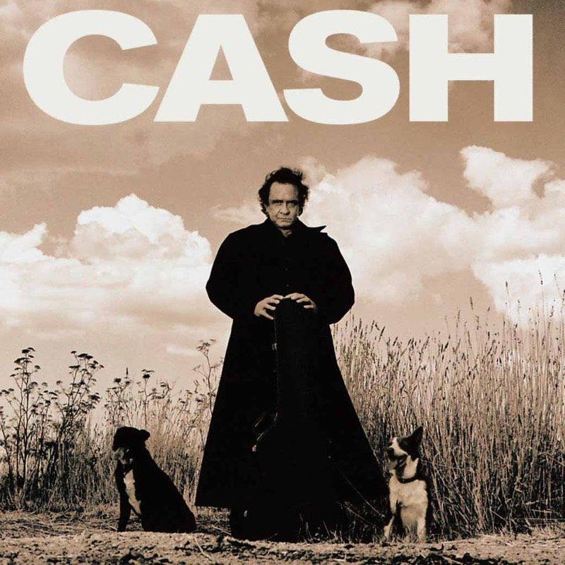

Artists
Our Artists

Pinkfong
The children's music powerhouse behind the most-watched video on the internet. Short, loud, unbelievably sticky.
- Baby Shark
- Wheels on the Bus
- Five Little Monkeys
- Monkey Banana
- Shark Family

Adriano-Celentano
Sixty years of Italian pop in one voice: rock and roll imported, rewritten and sung back louder.
- Azzurro
- L'emozione non ha voce
- Il ragazzo della via Gluck
- Susanna
- Confessa

Asake
Amapiano log drums, fuji chants and street-Yoruba hooks. The loudest new voice out of Lagos.
- Sungba
- Joha
- Jogodo
- Amapiano
- Lonely At The Top

Miyagi and Andy Panda
Two rappers from Vladikavkaz, half sung and half spoken, built on dub basslines and long reverbs.
- Kosandra
- Utopia
- Minor
- Saloon
- I Got Love

Johnny Cash
The man in black. Three chords, the truth, and a baritone that outlasted every genre it was filed under.
- Hurt
- Ring of Fire
- Highwayman
- God's Gonna Cut You Down
- Ghost Riders in the Sky